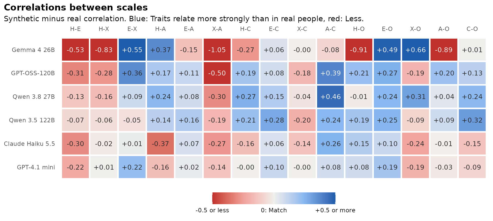
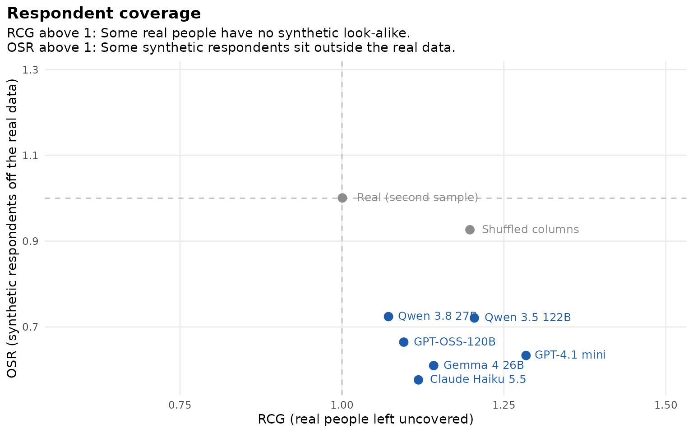
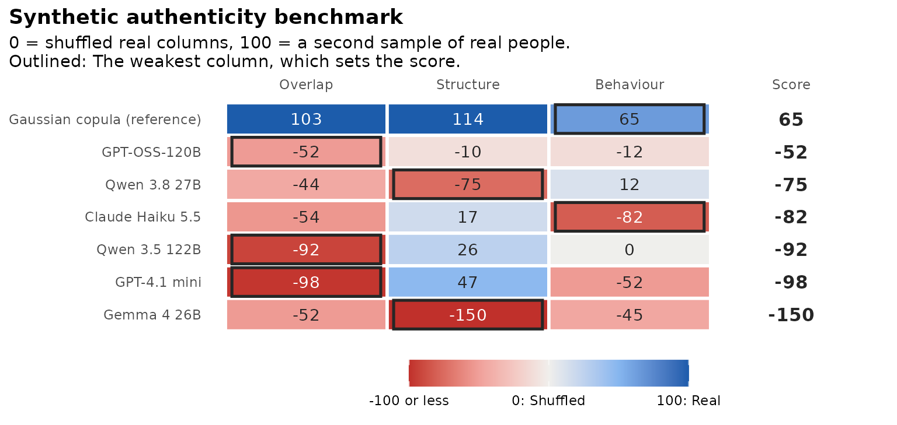

The benchmark scores each model on Overlap, Structure and Behaviour. Three diagnostics look at failures those columns can miss. They come from recent studies of synthetic survey respondents, and they do not change the benchmark score:
-
synthetic_construct(): Do the scales hold together and relate to each other as they do in real people? -
respondent_coverage(): Does every real person have a synthetic look-alike, and do synthetic respondents stay inside the real data? -
synthetic_copula()andauthenticity_benchmark(copula = TRUE): How does a generator with no language model do?
The diagnostics compare models and support decisions about them. They do not show that synthetic data can replace a field test.
The data
All 240 HEXACO items for Canada, with three attempts per model:
library(synthcheck)
real <- hexaco_real[hexaco_real$country == "Canada", ]
ca <- hexaco_llm[hexaco_llm$country == "Canada" & hexaco_llm$attempt <= 3, ]
synthetic <- as_synthetic_list(ca, items = hexaco_items$item)Construct structure
Structure averages over every pair of items, which is 28,680 pairs
for 240 items. A model can do well there and still blur the six traits
together, or make every scale too coherent.
synthetic_construct() makes three checks for each scale and
model:
-
Trait correlations:
trait_cor_gapis the mean absolute difference between the synthetic and the real correlations among the scale scores. -
Reliability:
alpha_gapis the synthetic minus the real Cronbach’s alpha. Above 0 means the items hang together more tightly than in real people. That is the “too coherent” pattern, not a better result. -
Loadings:
phiis Tucker’s congruence between the synthetic and the real one-factor loadings of each scale. Loadings of similar size give a highphiby chance, so each value is compared with a permutation null (phi_null).rejectsis the share of scales whosephiis above chance.
cs <- synthetic_construct(synthetic, real, hexaco_items, n_perm = 100, n_splits = 10)
cs
#> Construct structure
#> 240 items in 6 scales, 1708 real respondents.
#>
#> model attempts trait_cor_gap alpha_gap phi phi_null rejects
#> Gemma 4 26B 3 0.47 -0.02 0.75 0.71 0.72
#> GPT-OSS-120B 3 0.24 0.04 0.94 0.91 0.67
#> Qwen 3.8 27B 3 0.19 0.05 0.98 0.95 0.83
#> Qwen 3.5 122B 3 0.17 0.01 0.96 0.92 0.94
#> Claude Haiku 5.5 3 0.16 -0.01 0.94 0.91 0.50
#> GPT-4.1 mini 3 0.11 -0.06 0.82 0.80 0.39
#> Real (second sample) 10 0.04 0.00 1.00 0.94 1.00
#>
#> trait_cor_gap: Mean |difference| of the correlations between scales.
#> alpha_gap: Synthetic minus real alpha (above 0 = too coherent).
#> phi: Tucker's congruence of the loadings; phi_null: Its value by chance; rejects: Share of scales with phi above chance (p < 0.05).The “Real (second sample)” row shows how big the gaps are from sampling noise alone. The correlations between traits show the largest differences:
gg_construct(cs, "cor")
Red means two traits relate less strongly than in real people, blue
more strongly. gg_construct(cs) shows alpha per scale on
the same colour scale.
Respondent coverage
Overlap looks at scale scores one scale at a time.
respondent_coverage() treats each respondent as one point,
the keyed answers to all items, and measures distances to the nearest
neighbour (Kumagae & Kaneko, 2026):
- RCG: How far real people are from the nearest synthetic respondent. Above 1 means some real people have no synthetic look-alike.
- OSR: How far synthetic respondents are from the nearest real person. Above 1 means some synthetic respondents sit outside the real data.
Both ratios are scaled by the distance between real people, so a second sample of real people gives about 1 on both.
rc <- respondent_coverage(synthetic, real, hexaco_items, n_draws = 3)
rc
#> Respondent coverage
#> 240 items, 1708 real respondents, 3 real samples per attempt.
#>
#> model RCG OSR pattern
#> Qwen 3.8 27B 1.07 0.72 Human-like
#> GPT-OSS-120B 1.10 0.66 Human-like
#> Claude Haiku 5.5 1.12 0.58 Contraction
#> Gemma 4 26B 1.14 0.61 Contraction
#> Qwen 3.5 122B 1.20 0.72 Contraction
#> GPT-4.1 mini 1.28 0.63 Contraction
#> Real (second sample) 1.00 1.00 Human-like
#> Shuffled columns 1.20 0.93 Contraction
#>
#> Both ratios are near 1 for a second sample of real people.
Every model has RCG above 1 and OSR below 1, which is the
“contraction” pattern. Synthetic respondents stay close to some real
people, but they leave others uncovered. pattern names it
once RCG is more than tol (0.1 by default) above 1, so the
models closest to 1 are still labelled “Human-like”. Synthetic
respondents that were simply noisy would show up as “off-support”, with
both ratios above 1.
A copula reference row
synthetic_copula() draws respondents from a Gaussian
copula of the real data. It keeps each item’s answer distribution and
the correlations between items, and nothing else. With
copula = TRUE, the benchmark adds it as a row:
items <- hexaco_items[hexaco_items$trait %in% c("H", "C"), ]
bm <- authenticity_benchmark(synthetic, real, items, fit_scales = character(0),
n_splits = 10, n_floor = 10, copula = TRUE)
bm$table[, c("model", "reference", "score", "overlap", "structure", "behaviour")]
#> # A tibble: 7 × 6
#> model reference score overlap structure behaviour
#> <chr> <lgl> <dbl> <dbl> <dbl> <dbl>
#> 1 Gaussian copula (reference) TRUE 64.6 103. 114. 64.6
#> 2 GPT-OSS-120B FALSE -52.2 -52.2 -10.1 -12.1
#> 3 Qwen 3.8 27B FALSE -74.6 -44.2 -74.6 11.9
#> 4 Claude Haiku 5.5 FALSE -81.8 -54.5 16.8 -81.8
#> 5 Qwen 3.5 122B FALSE -92.3 -92.3 26.1 0.313
#> 6 GPT-4.1 mini FALSE -97.8 -97.8 47.4 -52.5
#> 7 Gemma 4 26B FALSE -150. -52.4 -150. -45.4
gg_benchmark(bm)
A model below the copula row does no better than this generator. Keep in mind that the copula is fitted to the real data it is compared with. That makes it an in-sample reference rather than a competitor, and it is why its Overlap and Structure can go above 100. You can also use its respondents on their own:
cop <- synthetic_copula(real, n = 500, items = hexaco_items, attempts = 2)
dim(cop[[1]])
#> [1] 500 240References
- Chidichimo, E., Jung, M. J., Wallis, F. P. S., & He, J. K. (2026). Artificial Societies Benchmark: A validation framework for synthetic research. arXiv:2609.30030.
- Kumagae, Y., & Kaneko, M. (2026). Silicon samples match the answers but not the respondents. arXiv:2610.30900.
- Lukauskas, M., & Šarkauskaitė, V. (2026). Plausible but not valid: A psychometric audit of LLMs as synthetic survey respondents. arXiv:2608.14606.
Next
The synthetic authenticity benchmark explains the three anchored columns these diagnostics sit beside.